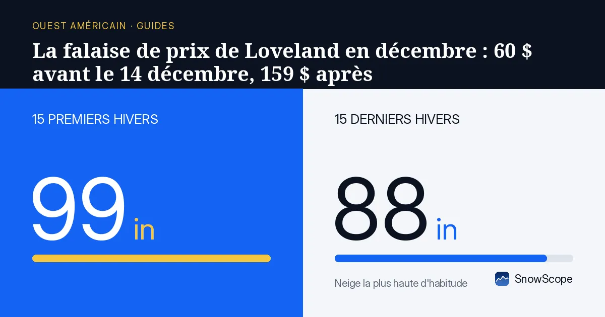

La falaise de prix de Loveland en décembre : 60 $ avant le 14 décembre, 159 $ après
Le bond tarifaire de Loveland le 14 décembre est brutal : 60 $ en ligne deviennent 159 $ au guichet. Le problème : la neige de début décembre est bien réelle mais peu épaisse, et vous payez pour l'altitude et l'espoir plutôt que pour une montagne entièrement ouverte. Les chiffres montrent quels skieurs devraient saisir l'occasion et lesquels devraient attendre.
Consultez les prévisions neige en temps réel pour Loveland Basin Ski Area sur l'application SnowScopeHauteurs de neige, alertes poudreuse et carte 3D, gratuitement.
Ce que vous obtenez pour 60 $ : un pari à mi-montagne
Un 1er décembre typique à mi-montagne de Loveland (3 592 m), vous avez 50 cm de neige. Deux semaines plus tard, vers le 15 décembre, cela atteint 74 cm. La différence compte : début décembre est skiable, mais mi-décembre est plus sûr pour une journée complète.
La moitié de tous les hivers connaissent 50 cm ou plus le 1er décembre à cette altitude. À mi-décembre, les probabilités montent à 67 %, donc la seconde moitié du mois est un pari plus solide. Le forfait à 60 $ vous permet de profiter d'une période plus mince et moins certaine.

L'altitude : l'atout de Loveland en début de saison
Les remontées de Loveland vont de 3 318 m à 3 866 m, ce qui en fait l'une des stations de ski les plus hautes du Colorado. Cette altitude signifie que la neige en début de saison dure plus longtemps ici qu'aux stations moins élevées. La neige à mi-montagne se tasse généralement fin septembre ; la base à 3 318 m reste dégagée plus longtemps.
Le 1er décembre, la base a généralement 40 cm seulement, tandis que le sommet en a 50 cm. Cette différence d'altitude est votre atout en début décembre : skiez au-dessus de l'altitude de base, restez sur les pistes damées, et vous avez de quoi faire.

Combien début décembre est-il plus mince que plein hiver ?
Le 25 décembre, mi-montagne atteint généralement 92 cm. Le 31 décembre, 99 cm. C'est 50 % plus profond que début décembre. Mars, le mois le plus enneigé de Loveland, enregistre en moyenne 137 cm à mi-montagne.
La tendance générale montre que début décembre s'est amincie. Pendant les hivers 1980-81 à 1994-95, la moyenne du 15 décembre à mi-montagne était 81 cm. Lors des 15 derniers hivers, elle a été 58 cm. L'hiver dernier, il n'y avait que 49 cm à cette date.
Le 4-Pak change la donne à partir du 14 décembre
Une fois la saison régulière lancée le 14 décembre, le prix au guichet grimpe à 159 $. À partir de ce moment, le 4-Pak de Loveland—quatre forfaits pour 299 $—devient un meilleur achat. C'est 75 $ par forfait, réduisant le coût par jour de moitié.
Si vous prévoyez deux visites ou plus mi-à-fin décembre, abandonnez l'offre précoce de 60 $ et attendez le 4-Pak. La neige sera plus épaisse, la montagne plus ouverte, et votre coût par forfait sera inférieur.
La comparaison : Loveland, Ski Cooper, Wolf Creek
Ski Cooper, près de Leadville, maintient les forfaits en semaine à 49 $ et le week-end à 99 $. Un 15 décembre typique, mi-montagne a 66 cm—pas beaucoup moins que les 74 cm de Loveland. Wolf Creek, la plus enneigée des trois, a 87 cm à cette date mais facture 96–110 $.
Le forfait en ligne à 60 $ de Loveland bat le prix du week-end de Cooper et le tarif journalier de Wolf Creek, même si la neige est moins épaisse. Mais si vous skiez en semaine, Cooper à 49 $ est moins cher et a pratiquement autant de neige en décembre. La chute des prix de 60 $ à 159 $ le 14 décembre est le vrai atout de Loveland : achetez avant cette date.
Qui devrait utiliser le forfait de 60 $
Profitez de l'offre en début de saison si vous skiez sur les pistes damées, tolérez 50–65 cm de base, et habitez près de Denver. Achetez en ligne à l'avance. Évitez le prix de 119 $ au guichet—cela n'a aucun sens.
Abstenez-vous si vous voulez toute la montagne ouverte, avez besoin de neige hors-piste, ou pouvez skier mi-décembre. Après le 14 décembre, achetez un 4-Pak ou utilisez un Indy Pass (Loveland en est membre ; Indy Base coûte 419 $, Indy+ coûte 469 $ pour deux jours dans chacun de plus de 300 domaines).
Conseils aux skieurs
- Achetez le forfait à 60 $ en ligne uniquement, pas au guichet. L'achat à l'avance est toute l'affaire.
- Skiez au-dessus de 3 500 m en début décembre ; la base est mince et peut exposer les rochers sous un recouvrement léger.
- Apportez une protection contre le vent : mi-montagne est à 3 592 m et le vent en décembre y est féroce.
- À partir du 14 décembre, le 4-Pak à 299 $ offre un meilleur rapport qualité-prix que le forfait au guichet de 159 $. Planifiez vos visites avant cette date.
- Vérifiez auprès du Colorado Department of Transportation (CDOT) les fermetures de l'I-70 et du tunnel Eisenhower ; l'ouverture précoce de la saison signifie un risque météorologique.
À propos de ces chiffres
Les hauteurs de neige des stations sont la neige la plus épaisse sur le haut du domaine à la date indiquée ; ce sont des estimations pour une zone, pas une mesure en un point. Les prévisions peuvent changer. Consultez toujours le bulletin d'avalanche officiel avant le hors-piste.
Bulletins d'avalanche officiels: Colorado Avalanche Information Center
Citer ce bulletin
Pour la recherche, l'enseignement ou la presse : chiffres et graphiques réutilisables librement sous CC BY 4.0 avec cette citation.
SnowScope (2026), La falaise de prix de Loveland en décembre : 60 $ avant le 14 décembre, 159 $ après, https://snowscope.app/blog/fr/2026/11/loveland-ski-area-december-deal-2026.html, consulté le 2026-11-14
SnowScope (Atlas Labs). (2026, November 14). La falaise de prix de Loveland en décembre : 60 $ avant le 14 décembre, 159 $ après. SnowScope snow reports. https://snowscope.app/blog/fr/2026/11/loveland-ski-area-december-deal-2026.html
BibTeX
@misc{snowscope2026lovelandskiareadecemberd,
author = {{SnowScope (Atlas Labs)}},
title = {La falaise de prix de Loveland en décembre : 60 $ avant le 14 décembre, 159 $ après},
year = {2026},
month = nov,
howpublished = {\url{https://snowscope.app/blog/fr/2026/11/loveland-ski-area-december-deal-2026.html}},
note = {Published 2026-11-14 17:47 UTC; accessed 2026-11-14}
}· CC BY 4.0 · Méthodes, données et outils →
Suivre Loveland Basin Ski Area
Gratuit : un message quand la neige arrive, et la météo chaque matin.